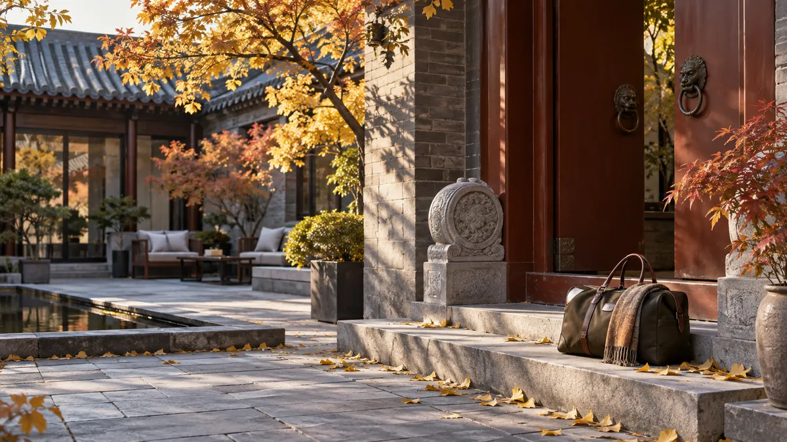
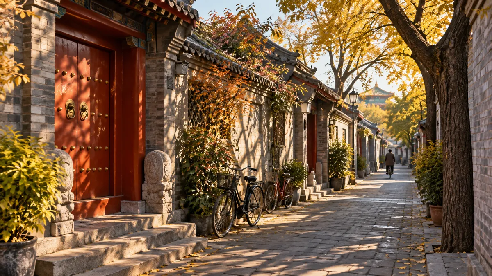

订票清单
需要提前预约
- 故宫博物院：通常提前七天放票；11月周一闭馆。
- 国家博物馆：提前预约，通常周一闭馆。
- 八达岭长城：建议提前订票，并预留天气备选日。
- 天安门广场：按当期规则预约入场时段。
Beijing · November 2026
从城墙晨光到胡同热气，在初冬到来前走进皇城、园林与老北京的日常。
11.14 — 11.23新加坡 · 北京大兴 · 新加坡
01 / 旅行概览
这是一段安排得恰到好处的初访北京之旅：经典景点在上午的好光线里完成，午后留给散步、甜点与意外的停留。11月干冷多风，行程将室外与室内体验交替安排。
抵达 · 11月14日
新加坡 SIN → 北京 PKX 00:55 起飞 · 07:10 抵达返程 · 11月23日
北京 PKX → 新加坡 SIN 17:05 起飞 · 23:40 抵达02 / 每日行程
十天的节奏与重点，按日排列。选一个日期直接跳转，或往下慢慢读。
大兴机场抵达后前往酒店寄存行李。安排一顿热早餐、附近短暂散步与充分休息，傍晚再办理入住。

上午参观天坛：祈年殿、回音壁与圜丘。午后在前门和周边小巷慢慢逛；牛街小吃也在城南，安排在这天不必跨城。晚上安排烤鸭。
早出发前往八达岭长城。选择体力舒适的步行段；需要时可使用缆车。下午回城后不再安排紧凑活动。
上午进入故宫，按中轴线游览并为宫殿细节留出时间。午后登景山，俯瞰紫禁城全景。
从东宫门进入颐和园，走长廊、昆明湖与重点宫苑。圆明园就在两公里外、同在海淀，体力允许可顺路加上；不必再跨城去奥林匹克公园。
上午雍和宫，随后走国子监街与五道营胡同。下午给咖啡、买手店和意外停留留出空白。

按预约时段进入天安门广场；国家博物馆只挑重点展厅，不赶全馆。傍晚可去王府井一带。
由鼓楼出发，沿什刹海与周边胡同散步。傍晚坐地铁 8 号线一路向北到奥林匹克公园，看点亮后的鸟巢与水立方——什刹海、鼓楼大街与奥林匹克公园都在 8 号线上，不用换乘。
留给长城改期、没走完的园子（圆明园若 11.18 没去成可放这天），或临时想去的地方。若要去环球度假区：园区在通州，单程约一小时、需单独购票，建议改到工作日——周日人最多。
早餐后收拾行李并退房。建议中午前后离开酒店，约14:00前抵达北京大兴机场。
把上午交给古迹，把下午交给偶然。
行程原则
03 / 出发之前
预约名额、保暖装备与手机网络，是这趟行程里最容易被低估的三件事。
订票清单
行前准备
手机与网络
04 / 北京味道
行程参考小红书指南，将小吃放在牛街与鼓楼一带，把正餐留给烤鸭、铜锅或一碗牛肉面。店铺分店与营业时间请出发前再次确认。
05 / 天气与注意事项
季节性参考 · 具体天气请在出发前 3–5 天确认
北京 · 11月
5–12° 白天约
−3–3° 夜间可能
体感冷、干、多风；中旬后更接近冬天。日出约 07:00、日落约 17:00，天黑得早，长城和景山风力更明显——户外尽量安排在中午前后。
带什么
出发前